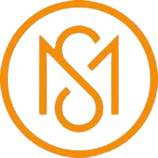
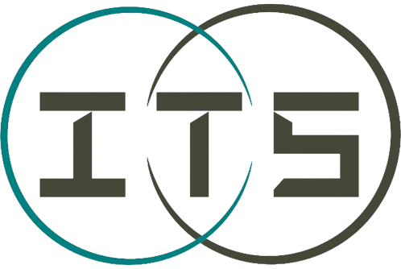
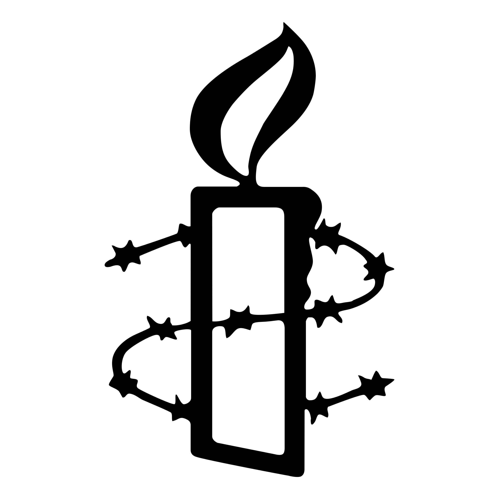
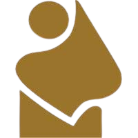
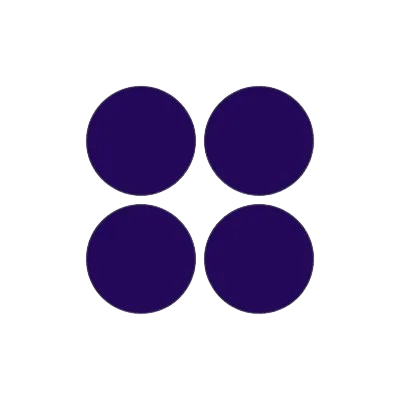

Hey there 👋
I'm Mydul, a technical project manager who turned nanotech engineer into sensor product leader.
I plan and steer R&D projects for magnetic sensors at Magnetic Sense GmbH in Stuttgart. M.Sc. in Nanosciences, cleanroom roots, two projects that led to a patent.
Open to a conversation?
Worked & studied at:
 Green University of Bangladesh
Green University of Bangladesh

Magnetic Sense GmbH Universität Siegen
Green University of Bangladesh

ITS Industriebedarf GmbH
Volunteered & engaged with:
 Model United Nations
Model United Nations
 WaterAid
WaterAid

Amnesty International
Model United Nations

Bishwo Shahitto Kendro
WaterAid

British Council